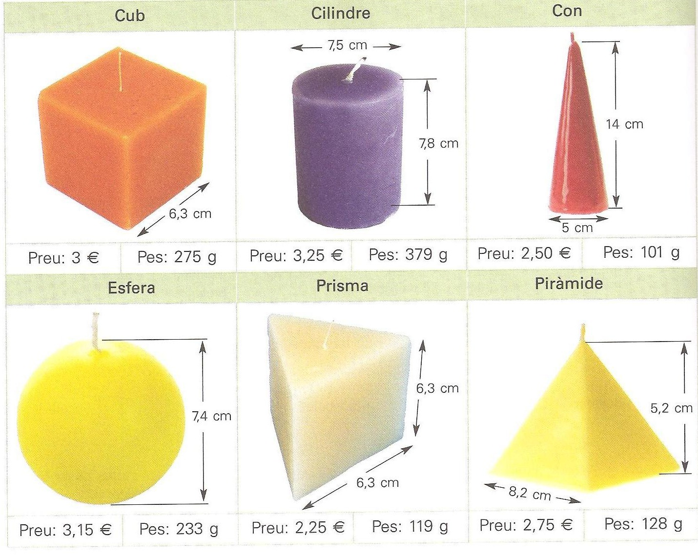

EXPERIMATES
Activitat sobre àrees i volums
|
Activitat 1. Un productor d'espelmes ven els següents models:  a) Calcula la superfície i el volum de cada espelma. Anota els resultats en una taula com aquesta: |
| Cub | Prisma | Piràmide | Cilindre | Con | Esfera | |
| Superfície (cm2) | ||||||
| Volum (cm3) | ||||||
| Pes (g) | ||||||
| Preu (€) |
|
b) El pes de les
espelmes és proporcional al seu volum? Calcula la densitat de la cera que fa
servir el fabricant.
c) Volem fer una capsa per l’espelma en forma de piràmide. Dibuixa el desenvolupament d’aquesta capsa i anota-hi les mides que haurà de tenir.
Font: Matemàtiques. Destreses bàsiques. Resolució de problemes 2. Editorial Cruïlla (modificat)
|